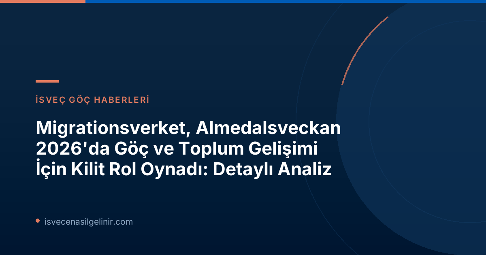

Migrationsverket'in Almedalsveckan 2026'daki Etkin Katılımı: Genel Bir Bakış
Migrationsverket, bu yılki Almedalsveckan'da önemli bir varlık göstererek, göç alanındaki güncel gelişmeleri kamuoyu ile paylaştı. Kurum, iki ayrı seminer düzenlemenin yanı sıra, birçok harici programda da yer aldı ve merkezi işbirliği aktörleriyle göç ve toplumsal gelişimle ilgili güncel konuları ele almak üzere diyaloglar gerçekleştirdi. Bu yılın odak noktası, özellikle AB Göç ve İltica Paktı'nın uygulanmasıydı. Ayrıca, kamu otoritelerinin hazırlığı, işgücü suçları, yapay zeka (AI) ve LGBTİ+ konuları da gündeme geldi.
AB Göç ve İltica Paktı: İsveç İçin Ne Anlama Geliyor?
Migrationsverket, AB Göç ve İltica Paktı'nın İsveç üzerindeki etkilerini derinlemesine ele alan bir seminer düzenledi. Bu paket, İsveç'in mülteci kabul sisteminde köklü değişiklikler getirecek potansiyele sahip. Tartışmalarda, paktın mevcut sisteme nasıl entegre edileceği ve ne gibi yeni zorluklar getirebileceği üzerinde duruldu.
EU'nun Göç ve İltica Paktı İsveç Mülteci Kabulünü Nasıl Etkileyecek?
Tarih: Salı, 13.30–14.30
Yer: S:t Hansgatan 21, Almedalsarenan
Düzenleyici: Migrationsverket
Katılımcılar:
- Veronika Lindstrand Kant (Uygulamadan Sorumlu Direktör, AB Göç ve İltica Paktı)
- Johanna Ó Duinnín (Görevli, Polismyndigheten)
- Karin Ödquist Drackner (Göç Uzmanı ve Politika Danışmanı, İsveç Kızılhaçı)
- Maria Mindhammar (Genel Direktör ve Açılış Konuşmacısı, Migrationsverket)
- Jesper Tengroth (Basın Müdürü ve Moderatör, Migrationsverket)
Ana Konular: AB Göç ve İltica Paktı'nın İsveç'in mülteci kabul sistemine etkileri.
Gönüllü Geri Dönüş Programları ve Toplumsal İşbirliği
Migrationsverket ve Ulusal Gönüllü Geri Dönüş Koordinatörü, gönüllü geri dönüş süreçlerinde farklı toplumsal aktörlerin nasıl işbirliği yapabileceğini tartıştıkları bir seminer düzenledi. Bu oturumda, gönüllü geri dönüşün etkinliğini artırmak için sivil toplum kuruluşları, yerel yönetimler ve diğer kurumlar arasındaki işbirliğinin önemi vurgulandı.
Farklı Toplumsal Aktörler Gönüllü Geri Dönüş İçin Nasıl Birlikte Çalışabilir?
Tarih: Salı, 15.00–16.00
Yer: S:t Hansgatan 21, Almedalsarenan
Düzenleyici: Migrationsverket ve Ulusal Gönüllü Geri Dönüş Koordinatörü
Katılımcılar:
- Teresa Zetterblad (Ulusal Gönüllü Geri Dönüş Koordinatörü)
- Petra Lindh (Birim Müdürü ve Uzman, Migrationsverket)
- Bilal Almobarak (CEO, Support Group Network)
- Åsa Simonsson (Belediye Direktörü, Svalövs komün)
- Katarina Gentzel Sandberg (Moderatör, Gullers Grupp)
Ana Konular: Sivil toplum kuruluşları ve resmi kurumlar arasında gönüllü geri dönüş sürecinde işbirliği.
Diğer Önemli Tartışma Başlıkları: Hazırlık, İş Gücü Suçları, Yapay Zeka ve LGBTİ+ Hakları
Migrationsverket, ana seminerlerinin yanı sıra, çeşitli önemli konuların tartışıldığı diğer programlarda da temsil edildi. Bu oturumlar, kamu yönetiminin artan krizlere hazırlığından, işgücü piyasasındaki suçlarla mücadeleye, yapay zeka stratejilerinin geliştirilmesinden, cinsel yönelim ve cinsiyet kimliği temelindeki iltica başvurularının incelenmesine kadar geniş bir yelpazeyi kapsıyordu.
Zorunlu Ama Esnek – AB'nin Dayanışma Modeli İsveç'i Nasıl Etkiliyor?
Tarih: Salı, 14.00–14.30
Yer: Hamnplan, yer 221
Düzenleyici: Göç Araştırmaları Delegasyonu (Delmi)
Katılımcılar:
- Jenny Bergsten (Araştırma Sekreteri, Delmi)
- Bernd Parusel (Kıdemli Siyaset Bilimi Araştırmacısı, İsveç Avrupa Politikaları Enstitüsü)
- Charlotte Marie (Bölüm Başkanı, Migrationsverket, Batı Bölgesi)
Ana Konular: AB'nin dayanışma modelinin İsveç üzerindeki etkileri.
Kriz Anında Liderlik – Devlet İşverenleri Artan Hazırlığa Hazır mı?
Tarih: Salı, 17.00–18.00
Yer: Korsgatan 4, İl Yönetim Kurulu Bahçesi
Düzenleyici: İşverenler Kurumu (Arbetsgivarverket)
Katılımcılar:
- Charlotte Petri Gornitzka (Vali, Gotlands län)
- Maria Mindhammar (Genel Direktör, Migrationsverket)
- Johan Kuylenstierna (Genel Direktör, Naturvårdsverket)
- Susanne Thedéen (Devlet Antikacısı, Riksantikvarieämbetet)
- Robert Egnell (Rektör, Försvarshögskolan)
- Jens Mattsson (Genel Direktör, FOI)
- Ann Lindberg (Genel Direktör, Läkemedelsverket)
- Johan Norrman (Genel Direktör, Tullverket)
- Ann Follin (Genel Direktör, Arbetsgivarverket)
Ana Konular: Kamu kuruluşlarının artan hazırlık durumuna adaptasyonu ve liderlik.
Girişimden Hızlandırılmış Kapasiteye – Kamu Sektörü Uzun Süreli Bir Yapay Zeka Stratejisini Nasıl Oluşturur?
Tarih: Çarşamba, 10.45–11.45
Yer: Birgers gränd 7, Almedalen girişli bahçe
Düzenleyici: CGI
Katılımcılar:
- Cecilia Elb (Başkan Yardımcısı İş Danışmanlığı, CGI)
- Christian Dahlgren (Direktör Danışmanlık Uzmanı, Altyapı Mimarı, CGI)
- Ingrid Halvorsen (Dijitalleşme Müdürü, Varbergs komün)
- Johan Magnusson (Profesör, Göteborgs Üniversitesi ve UTTC)
- Stefan Andersson (Bölüm Başkanı, Migrationsverket)
Ana Konular: Kamu sektöründe sürdürülebilir bir yapay zeka stratejisi geliştirme.
İşgücü Suçları İsveç'in En Hafife Alınan Sorunu mu?
Tarih: Çarşamba, 09.00–10.15
Yer: Skeppsbron 24, Joda Bar ve Mutfak
Düzenleyici: Södertörn Üniversitesi ve Organize Suçla Mücadele İsveç (SMOB)
Katılımcılar:
- Maria Mindhammar (Genel Direktör, Migrationsverket)
- Jonas Andé (İsveç İşgücü Suçları Uzmanı, Skanska Sverige)
- Birgitta Pettersson (Şehir Direktörü, Uppsala komün)
- Tomas Andersson (Ulusal İşgücü Suçları Koordinatörü, Mali Suçlar Bürosu)
- Carina Lindfelt (Bölüm Başkanı İşgücü Piyasası ve Çalışma Ortamı, Svenskt Näringsliv)
- Mattias Schulstad (Araştırmacı Kamu Politikası Birimi, LO)
- Lars Lööw (Genel Direktör, İsveç İş Güvenliği ve Sağlığı Kurumu)
Ana Konular: İşgücü suçlarının İsveç işgücü piyasası üzerindeki etkileri ve mücadele yolları.
Cinsel Yönelim ve Cinsiyet Kimliği Temelli İltica Başvuruları
Tarih: Perşembe, 11.15–11.45
Yer: Hamnplan, yer 221
Düzenleyici: Göç Araştırmaları Delegasyonu (Delmi)
Katılımcılar:
- Anna Hammarstedt (Araştırma Sekreteri, Delmi)
- Lovise Brade (Konfederasyon Başkanı, RFSL)
- Anna Lindblad (Müdür, Migrationsverket Kurum Destek Departmanı)
Ana Konular: Cinsel yönelim, cinsiyet kimliği ve cinsiyet ifadesi temelindeki iltica başvurularının değerlendirilmesi.
Migrationsverket'in bu tartışmalardaki aktif duruşu, İsveç'teki göç politikalarının şekillenmesinde ne kadar merkezi bir rol oynadığını bir kez daha gözler önüne seriyor. Özellikle yeni AB Göç ve İltica Paktı'nın getireceği değişiklikler, gelecekteki göçmenlik başvuruları ve sverigemedborgarskapsprov.com gibi kaynaklar aracılığıyla vatandaşlık süreçlerini takip edenler için büyük önem taşıyor.
Anna Lindblad'dan Önemli Açıklamalar
Migrationsverket Kurum Destek Departmanı Başkanı Anna Lindblad, Almedalsveckan'daki varlıklarının, kurumun misyonunun önemli bir parçası olduğunu belirtti. Lindblad’a göre, göç alanında uzman bir kurum olarak kamuoyu tartışmalarına katılmak büyük önem taşıyor. Özellikle AB Göç ve İltica Paktı ile birlikte göç alanında kapsamlı değişiklikler yaşanırken, Migrationsverket'in bilgi, deneyim ve bakış açısıyla bu tartışmalara katkıda bulunması gerektiğini vurguladı.
Geleceğe Yönelik Çıkarımlar
Almedalsveckan 2026'da Migrationsverket'in katılımıyla gerçekleşen bu kapsamlı tartışmalar, İsveç'in gelecekteki göç politikalarına ışık tutuyor. AB Göç ve İltica Paktı'nın tam olarak uygulanması, gönüllü geri dönüş programlarının güçlendirilmesi ve devlet kurumlarının değişen koşullara adaptasyonu, önümüzdeki dönemde göçmenlik süreçlerini doğrudan etkileyecek ana faktörler olacaktır. Bu gelişmelerin takibi ve doğru bilgiye erişim, İsveç'te yaşamayı düşünen veya halihazırda yaşayan bireyler için hayati önem taşımaktadır.
Referanslar: Migrationsverket resmi duyurusu (https://www.migrationsverket.se/nyhetsarkiv/nyhetsarkiv/2026-06-22-migrationsverkets-medverkan-under-almedalsveckan-2026.html)
İsveç Göçmenlik Süreçleri Hakkında Daha Fazla Bilgi Edinin!
İsveç'e göç, oturum izni, vatandaşlık ve diğer tüm yasal süreçlerle ilgili en güncel ve doğru bilgilere ulaşmak için sitemizi ziyaret edin.